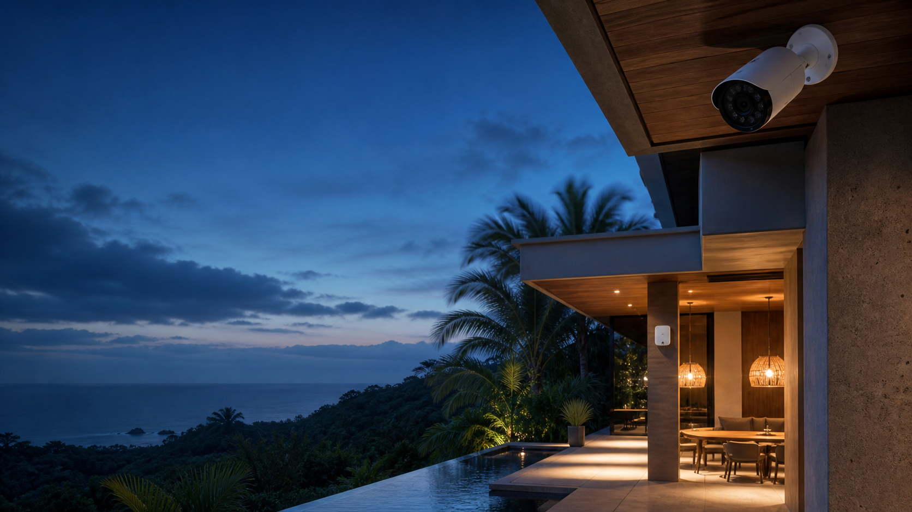

Vista de solución
Villa · Uvita
Protección discreta para disfrutar con tranquilidad.
Cobertura en accesos, parqueo y áreas sociales, diseñada para el clima tropical y controlada desde el teléfono.
Áreas de aplicación
✓
Monitoreo remoto, alertas útiles y evidencia clara sin invadir la arquitectura.